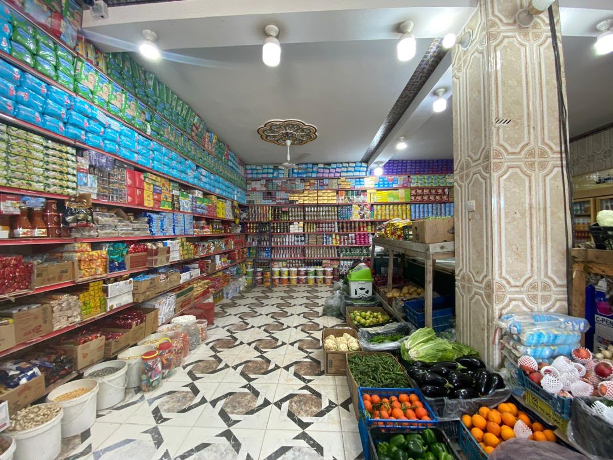
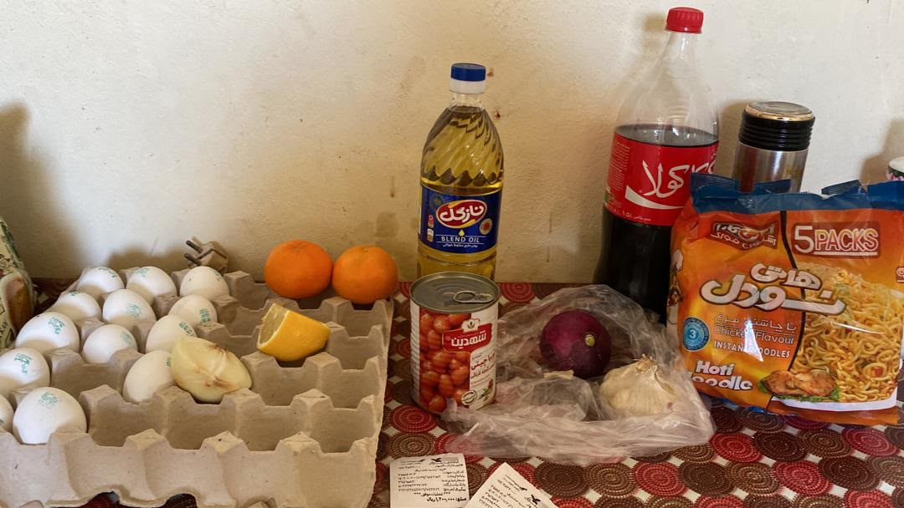
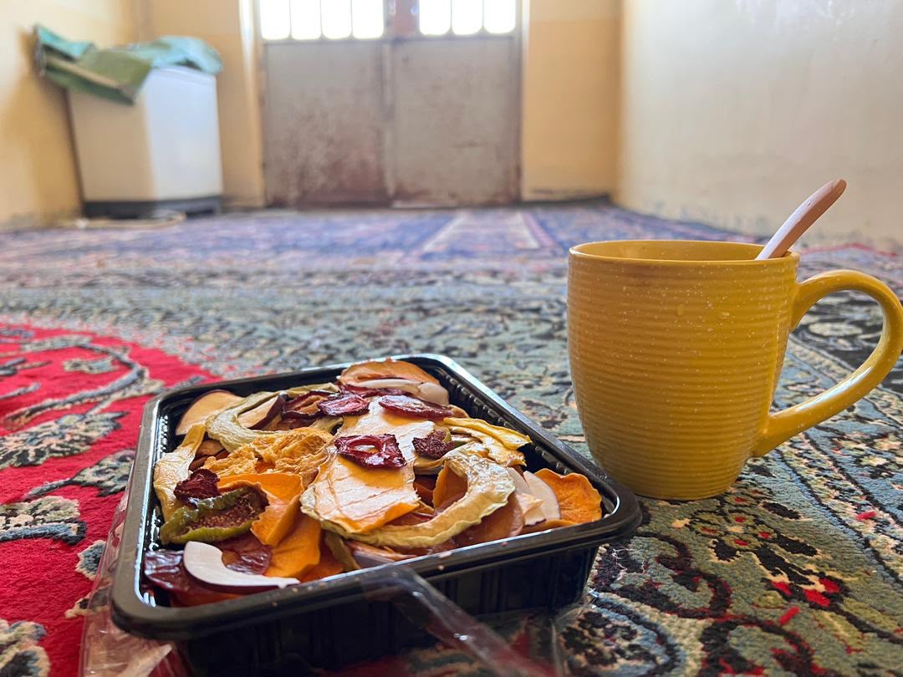
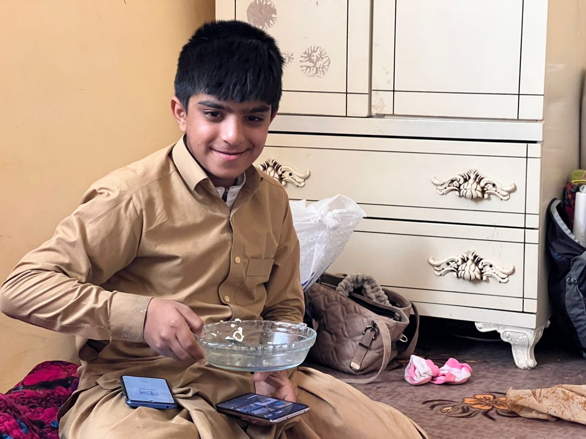
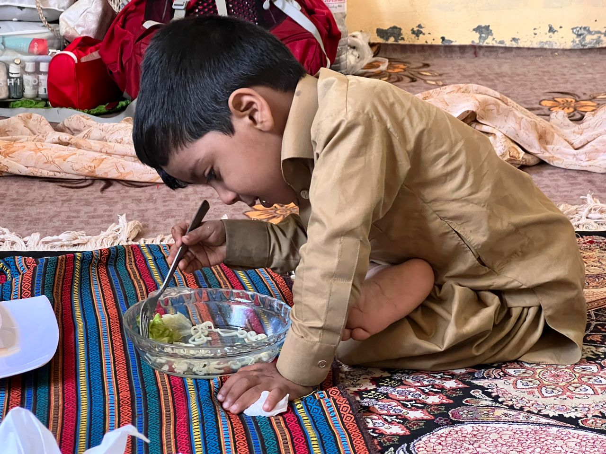
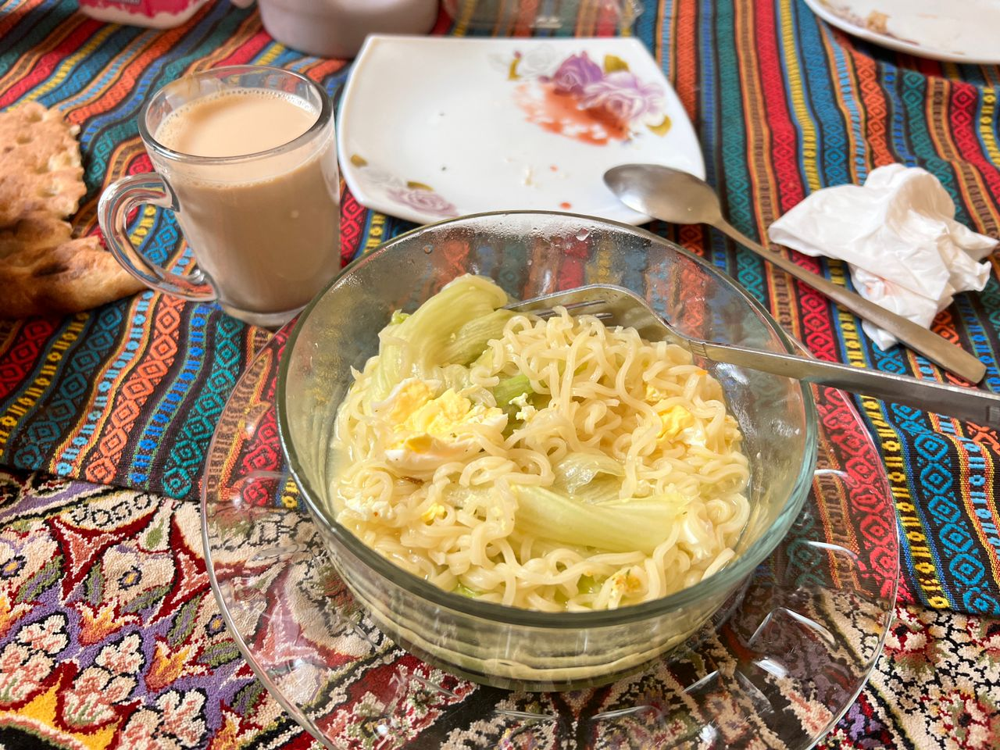
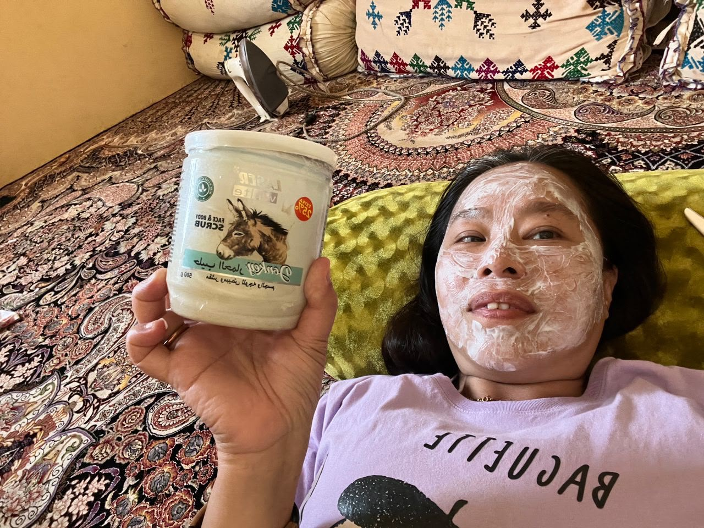
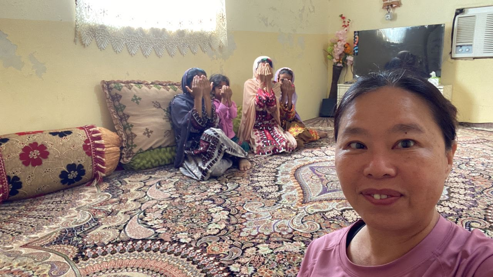

Real Story · 中文
小土房，是 Chabahar 给我的第一层 shelter。
从 Iranshahr 之后，我来到 Chabahar。 一开始，我住在 Mr. Abdullah 提供的 old house，也就是我说的“小土房”。 那段时间大概是 08/01/2024 到 13/01/2024。
这不是 hotel，也不是舒服的民宿。 它更像是一间很简单、很安静、很 raw 的 temporary shelter。 对我来说，它是 Iran winter chapter 里面的第一层落脚点。
Mr. Abdullah 以前是 Chabahar 的 teacher，所以附近的小 village 很多人都知道： 我是他的 guest。 这件事很重要，因为它给了我一层看不见的 protection。 我的 post 不是鼓励别人重复我的做法；只是记录我当时为什么可以这样留下来。

Village Shop · Simple Living
I bought what I knew how to cook.
Normally, in that local setting, women did not simply go out alone. Many would go with family or husband. But I was a foreign solo woman in a campervan, and sometimes I purposely did not care too much. Sometimes I wore hijab, sometimes I did not.
I went to the local grocery shop and bought basic food. My cooking skill there was very simple: fried egg and Maggi mee. That was enough to keep me going.


Mr. Abdullah’s Family
They came to visit the little old house.
Mr. Abdullah later brought his family to visit me at the little old house. One day, when Mr. Abdullah and his wife went out, I cooked Maggi mee for the children.
It was such a simple thing, but the children loved it. A Malaysian instant noodle became a small bridge inside an Iranian village house.



More Little-House Fragments
Face mask and curious children.
Before Chabahar fully became home, Mr. Abdullah had already opened many small doors. In Zahedan, he provided meals and helped Tuzi move through the first confusing days in Iran.

When Mr. Abdullah’s family came back to their hometown and visited Tuzi at the little old house, his wife invited Tuzi to try a local face mask product. It became one of those funny, intimate domestic moments that only happen after strangers begin to trust each other.

The neighbour children were also curious about the foreign woman staying alone in the old house. They would drop by and call for her, but their faces are hidden here out of respect for local custom and privacy.

English Memory Summary
A simple shelter, protected by a name.
From 08/01/2024 to 13/01/2024, Tuzi stayed in a little old house in Chabahar through Mr. Abdullah’s connection. Mr. Abdullah had been a teacher in Chabahar, so the small villagers knew that Tuzi was his guest. That knowledge quietly helped protect her.
During this period, she bought groceries from the village shop and lived very simply: fried eggs, Maggi mee, tea, dried fruit, and basic supplies. When Mr. Abdullah’s family visited, she cooked Maggi mee for the children, and they loved it.
This memory is recorded as a personal archive, not as advice for other travellers to repeat the same risk.
Heart Statement
小土房不是舒适的家，可是它是 Iran winter 给我的第一层保护。
我在那里不是很会生活，只会煎蛋和煮 Maggi mee。 可是因为 Mr. Abdullah 的名字，因为 village 知道我是他的 guest， 那间小土房还是让我先停下来。
The little old house was not comfort. It was the first shelter that allowed winter to keep opening.